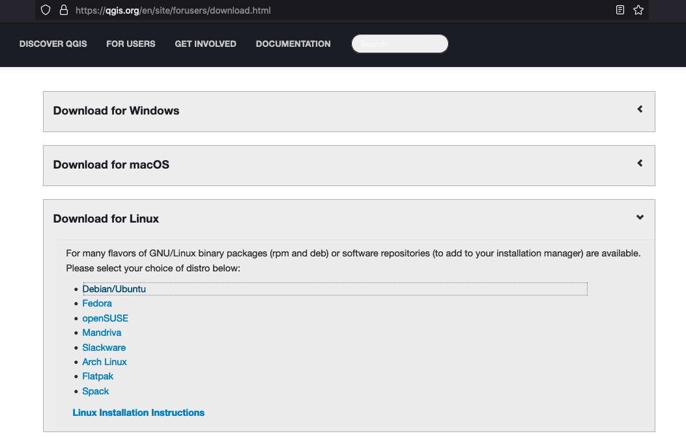
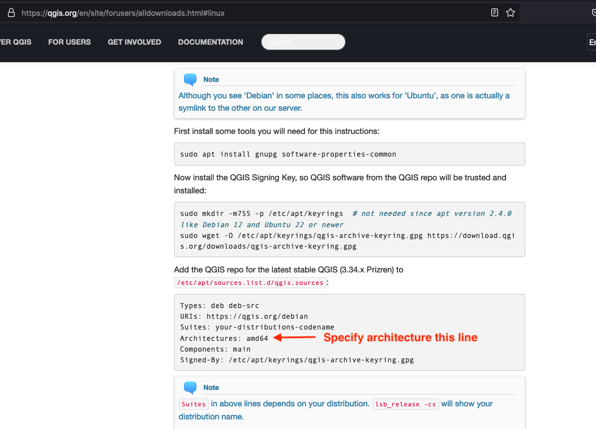
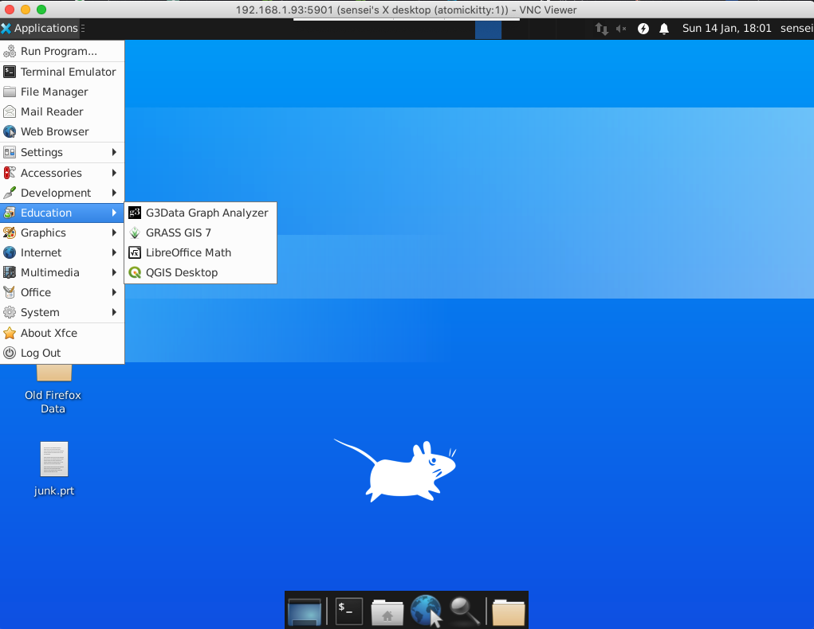
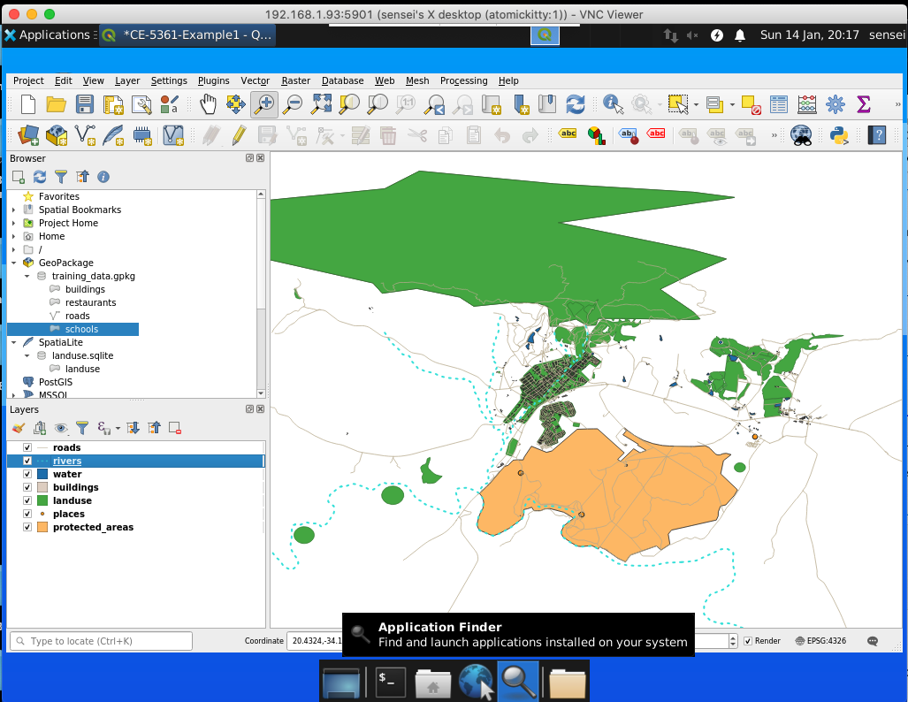

Specialized Software¶
A typical KSA (knowledge, skills, abilities) requirement for engineering H&H practioners is
Software Proficiency: Familiarity with hydrological modeling software such as HEC-HMS, HEC-RAS, SWMM, and MODFLOW.
Course Website
Readings¶
Videos¶
Outline¶
What is software proficiency?
HEC-HMS
SWMM
QGIS
What is meant by software proficiency?¶
“Familiarity with modeling software” refers to the engineer’s level of understanding and experience with using specific software tools that are commonly employed in hydrological modeling and engineering design tasks. This familiarity typically includes:
Basic Understanding: Understanding the purpose, capabilities, and limitations of the software.
Navigation: Ability to navigate the user interface and menus to access various features and functions.
Data Input: Competence in inputting data into the software, including hydrological data, topographic data, and other relevant information.
Model Setup: Proficiency in setting up and configuring the model parameters, boundary conditions, and simulation settings.
Model Execution: Ability to run simulations and analyze model outputs to assess hydrological conditions and behavior.
Interpretation: Skill in interpreting model results and identifying trends, patterns, and anomalies.
Troubleshooting: Capability to troubleshoot errors or issues that may arise during model setup or execution.
Calibration: Understanding of model calibration techniques to adjust model parameters and improve the accuracy of predictions.
Validation: Knowledge of validation procedures to assess the reliability and accuracy of model outputs against observed data.
Documentation: Ability to document model setup, input data, methodology, and results in a clear and organized manner.
Overall, familiarity with modeling software implies that the engineer is comfortable and proficient in using the software as a tool to support hydrological analysis, design, and decision-making processes within their field of expertise.
Some Commonly Used Speciality Software¶
In the field of hydrology and hydraulics analysis, several software tools are widely used to simulate, model, and analyze various aspects of water flow, drainage systems, and hydraulic structures.
Surface Water Hydrology¶
One of the most prevalent software packages is HEC-HMS (Hydrologic Engineering Center - Hydrologic Modeling System), developed by the U.S. Army Corps of Engineers. HEC-HMS is a powerful tool for modeling rainfall-runoff processes, watershed response, and streamflow routing. It allows engineers to simulate different hydrological conditions, assess flood risks, and design effective flood control measures. With its comprehensive features for data input, model calibration, and result visualization, HEC-HMS is a staple in hydrological modeling studies.
The European Union equivalent to HEC-HMS is MIKE SHE; a comprehensive hydrological modeling software developed by DHI, a global consulting and software company specializing in water and environmental solutions. MIKE SHE is widely used in Europe and globally for simulating hydrological processes, including rainfall-runoff, soil moisture dynamics, groundwater flow, and surface water interactions. Similar to HEC-HMS, MIKE SHE allows engineers and hydrologists to model watersheds, assess flood risks, and design water management strategies.
For urban drainage and stormwater management, the Storm Water Management Model (SWMM), developed by the U.S. Environmental Protection Agency (EPA), is also widely used. SWMM is a dynamic simulation model that simulates rainfall-runoff processes, sewer system hydraulics, and pollutant transport in urban areas. It allows engineers to design and optimize stormwater management systems, including storm sewers, detention basins, and green infrastructure practices. With its flexible modeling framework and comprehensive range of features, SWMM is an essential tool for sustainable urban water management and flood risk mitigation.
Note
SWMM is an integrated hydrology/hydraulic model whereas HEC-HMS is strictly a hydrology model (with some limited hydraulics)
Surface Water Hydraulics¶
A commonly used software in hydraulic engineering design is HEC-RAS (Hydrologic Engineering Center - River Analysis System), also developed by the U.S. Army Corps of Engineers. HEC-RAS is specifically designed for modeling river hydraulics, open channel flow, and floodplain inundation. It enables engineers to evaluate river morphology, analyze bridge and culvert hydraulics, and assess floodplain encroachment. With its robust computational capabilities and intuitive graphical interface, HEC-RAS is indispensable for designing bridges, levees, and other hydraulic structures in riverine environments.
As already mentioned, SWMM is a hydraulic model with hydrologic components; It is another tool suitable for river hydraulics, open channel flow, culvert hydraulics, and inundation studies. SWMM is intended for use at a smaller geographical scale than HEC-RAS, but the limitation is largely conceptual.
Note
SWMM is an integrated hydrology/hydraulic model whereas HEC-RAS is strictly a hydraulic model.
Data Management Tools¶
In addition to these specialized software packages, Geographic Information Systems (GIS) software such as ArcGIS and QGIS are commonly used in conjunction with hydrological and hydraulic modeling tools. GIS enables engineers to integrate spatial data, perform spatial analysis, and visualize modeling results in a geographic context. By combining GIS with hydrological and hydraulic software, engineers gain insight into the spatial distribution of water resources, watershed characteristics, and flood hazards, facilitating informed decision-making in engineering design projects.
QGIS¶
What is QGIS?¶
QGIS, or Quantum GIS, is an open-source geographic information system (GIS) software that allows users to view, edit, and analyze geospatial data. Here’s an overview of its history, recent state, and common uses:
QGIS was first released in 2002 by Gary Sherman as an open-source alternative to proprietary GIS software. Over the years, it has evolved through contributions from a global community of developers, becoming a powerful and user-friendly GIS tool.
As of January 2022, QGIS was still being actively developed, with regular updates and releases. The software has a large user community that contributes to its improvement and the development of plugins to extend its functionality. Features are continually added and enhanced, making it a competitive option in the GIS software landscape.
Typical Uses:¶
Data Visualization: QGIS allows users to create maps and visualize geospatial data in various formats, such as shapefiles, GeoJSON, and more.
Data Editing: Users can edit and digitize spatial data directly within the software, making it useful for tasks like updating maps or correcting geographical information.
Spatial Analysis: QGIS provides a wide range of tools for spatial analysis, including proximity analysis, overlay analysis, and statistical analysis, aiding in decision-making processes.
Map Design: The software includes tools for designing aesthetically pleasing maps with customizable symbology, labels, and layouts.
Integration: QGIS supports the integration of various data sources, including GPS data, remote sensing data, and data from online services.
Plugins and Extensions: The availability of plugins and extensions allows users to customize and extend the functionality of QGIS based on their specific needs.
Open Source: Being open source, QGIS is free to use, and its source code is accessible to developers, encouraging collaboration and continuous improvement.
Learn more at the official QGIS website.
Note
Here are useful QGIC GitHub links:
Download(s) Your best bet is probably to work through the official QGIS website.
Why QGIS instead of ESRI products?¶
You may have already used the University-ble$$ed ESRI GIS products in GIST 3300/5300 Geographic Information Systems, or other GIS-based courses at TTU, and wonder why I choose QGIS. The two main reasons are:
QGIS is Open Source (I am a cheap).
It will run in some form without much fuss on a PC, MAC (both intel, and Apple silicon), and in Linux (on intel/amd and arm silicon).
If you already have ESRI-based GIS tools use them, no good reason to install a second GIS.
Note
Several other factors may influence someone to choose QGIS over other similar GIS (Geographic Information System) tools. Here are some reasons why individuals and organizations might prefer QGIS:
Open Source and Free: QGIS is open-source software, meaning it is free to use and distribute. This can be a significant advantage for users or organizations with budget constraints, as it provides powerful GIS capabilities without the need for a substantial financial investment.
Active Community Support: QGIS has a vibrant and active user community. This community contributes to the development of the software, creates plugins, and provides support through forums and documentation. The availability of community support can be valuable for users seeking assistance or looking to extend QGIS’s functionality.
Cross-Platform Compatibility: QGIS is designed to run on multiple operating systems, including Windows, macOS, and Linux. This cross-platform compatibility makes it accessible to users with different operating system preferences.
User-Friendly Interface: QGIS is known for its user-friendly interface, making it accessible to both beginners and experienced GIS professionals. The software employs an intuitive layout and design, facilitating ease of use for those new to GIS.
Extensive Functionality: QGIS offers a broad range of tools and features for data visualization, editing, and analysis. Its functionality is comparable to many proprietary GIS tools, and it continues to evolve with regular updates and new releases.
Plugin System: QGIS has a robust plugin system that allows users to enhance and extend the software’s capabilities. Users can install plugins to add specific functionalities tailored to their needs, making QGIS adaptable to a wide range of applications.
Interoperability: QGIS supports various data formats and standards, ensuring compatibility with data from different sources. This interoperability makes it easier to integrate QGIS into existing workflows and work with diverse geospatial datasets.
Customization: Users can customize QGIS to suit their specific requirements. This includes customizing symbology, creating tailored layouts, and utilizing plugins to add specialized tools, making QGIS adaptable to a variety of use cases.
Ultimately, the choice between GIS tools depends on the specific needs, preferences, and constraints of the user or organization. QGIS’s open-source nature, community support, and extensive functionality make it a compelling choice for many GIS users.
Installation¶
Windows and Mac, choose the appropriate installer and do what the picture menus show you.
Windows¶

Macintosh¶

For this course we will assume either a Windows or Mac install, some Linux notes are below but beyond scope. Naturally we cannot use on-campus machines to demonstrate, hence my laptop!
Note
Linux is more complicated, especially if trying to install on a non-amd chipset.
Here is how I installed onto a Raspberry Pi. First get the correct instructions:
Then modify the gis.sources file as needed: 
Verify the Install This is a tricky part; just opening the software is a good start. Here is the process on my computer:
Find the software (my install defaulted it to “Education” which is not a bad choice.) 
Launch and wait for initial interface screen

Work through tutorials Now to see if the install is complete enough work through the On-Line training manual. If you can get to Module 6 without much fuss; you probably have a working installation. On my machine, a representative map from the example data (served by qgis website) is: 
Getting Data¶
This is a bit tricky if this is first time (like me); there are lots of data available.
We mostly will want:
Base maps (Open Street Maps is a good starting point)
Elevation models (DEMs) (Several sources. NASA, USGS, TNRIS, similar sources - it takes some online reading to figure out how to access)
USGS Earth explorer …. https://earthexplorer.usgs.gov/
Open Topography….https://portal.opentopography.org/raster?opentopoID=OTSRTM.082015.4326.1
Google earth engine ……. https://earthengine.google.com/platform
From Drone imagery — AgiSoft Processing.
You can also generate yours with kml /kmz data collected from Google Earth Pro.
Level Sets (Contours) - you can make from elevation maps, in some locales they are already done - but are vector features so other than picture making not super useful
Point Clouds - These come from LIDAR scans and similar sources. Main trick is to figure out units (usually in MetaData) and figure out coordinates.
There are a lot of other things available, but baby steps for now. QGIS will be used for waterhsed delineation later in the course.